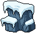

The current side is a thin timber line with isolated attachments. The target is a continuous snow-covered cliff/support structure. Larger connected masses and convincing overlaps will add fullness without multiplying tiny props.
All upper scenery, portrait, characters, gems, board/frame dimensions, separator, central lower HUD and text remain locked. Lantern/banner/crate sources remain reusable. Old artwork is preserved.
Support_Left35×70 native pixels

1× and nearest-neighbor 3×. Existing artwork, unchanged.
TimberRepeat14×18 native pixels

1× and nearest-neighbor 3×. Existing artwork, unchanged.
SnowRock38×41 native pixels

1× and nearest-neighbor 3×. Existing artwork, unchanged.
Lantern21×46 native pixels

1× and nearest-neighbor 3×. Existing artwork, unchanged.
RopePosts32×35 native pixels

1× and nearest-neighbor 3×. Existing artwork, unchanged.
LowerRock_Left62×55 native pixels
1× and nearest-neighbor 3×. Existing artwork, unchanged.
LowerRock_Right62×57 native pixels

1× and nearest-neighbor 3×. Existing artwork, unchanged.
SupplyCrate36×35 native pixels
1× and nearest-neighbor 3×. Existing artwork, unchanged.
Read the complete plan here
SNOWY MOUNTAIN — SIDE AND CORNER POLISH
Stage 1: analysis and asset plan. Awaiting review; no generation or scene edits.
Base: Stage 9 assembled Game preview, commit 42b71874; branch codex/snowy-mountain-pixellab / draft PR #218.
WHY THE CURRENT COMPOSITION IS WEAK
The repeated 14×18 timber gives a long, thin vertical line. The 35×70 support, lantern and banner read as attachments to it, while most of the gutter remains exposed flat masonry. The 38×41 snowy footing and 39×54 ice cluster are concentrated at the bottom, leaving a long unconnected middle section.
The bottom rocks are only 62×55 and 62×57. They are anchored two native pixels above the screen bottom; their height does not grow with the distance to the board. On taller views, a broad blank band separates the board footings from these rocks. The small crate and rope posts do not bridge that gap.
The target works through continuous dark cliff mass, thick snow shelves, embedded timber braces, and foreground drifts that overlap the next layer. Its corners are coherent foundations, not isolated props. Copy those relationships only; keep our existing 8×8 board, controls and upper scene.
FOUR PROPOSED KITS
1. LEFT BOARD SIDE — snow-loaded cliff buttress.
One connected blue-gray rock shoulder behind the existing outer timber; a buried upright and diagonal brace; broad snow cap; occasional short ice lip. Retain the existing lantern as a supported warm accent. Run a continuous, quieter cliff core down to a snow-heavy footing.
New modular pieces: upper shoulder/support, repeatable middle cliff course, lower footing. Initial source canvases around 40×80, 32×64 and 40×64; visible gutter silhouettes must fit the measured space. Extra canvas is transparent clearance or planned overlap behind opaque frame material, never permission to enter the grid.
2. RIGHT BOARD SIDE — timber-and-ice retaining edge.
Similar overall visual weight, but a taller exposed timber/brace and narrow vertical ice seam, with staggered snow shelves. Retain the banner and lantern only where their hooks visibly meet the structure. Different snow and rock profiles from the left; no mirrored lighting.
New pieces: right shoulder/support, right middle cliff course, right footing. Same fit budgets, separately drawn silhouettes. Every component connects to the next; no floating ice ornaments.
3. BOTTOM-LEFT — broad snowdrift on a rock foundation.
A single large stone mass, deep snow overhang and a short buried fence/post. Blue ice emerges from a crevice; a partly buried supply detail is secondary. A sloping drift carries weight inward near the bottom edge without reaching the central text lane.
New pieces: cohesive rock/snow core (about 80×64), narrow cliff connection (about 32×64), separate overlapping snow apron (about 64×24). Retain reusable rope/ice pieces only if they have convincing sockets/contact.
4. BOTTOM-RIGHT — taller rocky cargo corner.
One grounded stepped rock mass with stacked snow, angled timber support and a crate on a visible ledge. It rises toward the board footing and balances the broader left corner. No second detached rock island.
New pieces: right rock/snow core, narrow connection, snow apron, in the same initial size budgets. Reuse the existing 36×35 crate if it reads as a secondary prop; replace only if its native size cannot serve the approved composition.
SIZING AND ASSEMBLY RULES
Common phone views leave only 30–31 native pixels outside each board-frame edge (37–38 with the tested tall safe area; 46 at 360×640). Richness must therefore come from vertical continuity, overlapping planes and snow thickness, not squeezing the board or stretching artwork. Keep the front frame readable. Any structural underlap stays behind the opaque outer rim; snow and ice never enter the playable opening.
The space below the board ranges from 90 to 171 native pixels in the captured layouts. Build corners from a broad fixed-size base plus narrow connecting courses, adding or omitting complete connector modules for the available height. Never stretch a rock to fill the gap. Use sculpted silhouettes that narrow beside potion/bomb controls and widen below them; check actual control/text bounds, not a single percentage of screen width. At 360×640 the controls occupy much of the corner area: prioritize UI and connected structure, omit optional loose props rather than clipping or shrinking them.
Layer order: unchanged muted masonry → quiet cliff core → embedded timber/rocks → snow shelves and limited ice → existing frame/UI. Contact shadows are small hard clusters under snow, beams and crates. Upper snow planes are broad; rock faces quieter; wood subdued; lantern warmth localized. Keep source pixels, binary alpha, clean contours and coherent existing material ramps. No blurry glow, heavy texture noise or full-scene repaint.
Make snow lips and stone seams overlap naturally across module joins. Complete props retain transparent clearance; seamless architectural courses can meet at authored tile edges. The two corners should each read as one mass, extending to the screen edges through intended tiling/ground continuation, not through chopped-off prop silhouettes.
KEEP / CHANGE
Keep exact: upper environment and sky extension, WAVE/GUIDE/settings, player portrait, battle floor/separator, all actors, bars, board/gems/cells, board dimensions and frame geometry, bottom controls/text, muted masonry and gameplay.
Keep as reusable sources: accepted lantern, banner, rope posts, crate and ice. Their old files stay untouched even if a new assembly omits some.
Replace in the later candidate only: the thin side repetition, isolated side footings and undersized lower rock composition. All earlier stage sources/captures remain intact.
NEXT CHECKPOINTS
Stage 2: PixelLab individual side assets, then LibreSprite native cleanup and side-kit review. Generate connected major forms first; keep every raw candidate and cost receipt. No full-scene image or automatic palette flattening. Stop before corners.
Stage 3: generate/clean the two larger corner kits; review native sources. Stop.
Stage 4: temporary Unity assembly using existing side/lower presentation helpers, with unchanged shared layout. Stop.
Stage 5: overlap/snow/contact-shadow polish; paired Unity captures at the same five sizes, exact protected-region and source-hash checks, canvas/board/input clearance, native pixel scale and animation continuity. Stop before integration/merge.
STAGE 1 EVIDENCE AND LIMITS
Inspected the supplied target, current 720×1280 and tall-safe Unity captures, native side/corner sprites, current placement code, canonical guide and actual Rattlebones/Farmer/Pan images. Reference and bound production hashes match the register. All 9,485 previously protected files retain their hashes.
Existing Stage 9 Unity evidence is reused for analysis; no fresh Unity execution is claimed. No artwork, runtime code, scene or production binding was changed. PixelLab usage: 0 generations. This plan is proposed art direction, not approved artwork. Stop for Stage 1 review.
No generation or fresh Unity run in this analysis stage. 0 PixelLab generations. Current scene and all approved artwork are unchanged. Awaiting review before Stage 2.